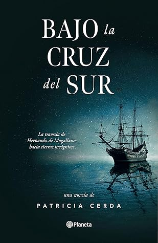

Bajo la Cruz del Sur
Reseña por Jorge I. Zuluaga

Ver reseña en GoodReads (necesita cuenta)
La novela está escrita en un estilo peculiar. No conozco otras obras de su autora, Patricia Cerda (historiadora), pero adivino que el estilo es propio solo de esta novela en particular. La manera en la que esta escrita (frases y párrafos cortos, abundantes citas a textos clásicos, versiones muy resumidas de hechos muy dramáticos) se me antojo similar al de los cronistas de la época y naturalmente muy lejano al de la literatura contemporánea. Tal vez por eso no le agrade a muchos pero creo a los que de verdad les gusta la historiografía lo encontrarán muy atractivo.
La novela empieza un poco lenta; está muy cargada de personajes y es fácil perderse en un "bosque" de nombres, nacionalidades y títulos. También da saltos adelante y atrás en el tiempo sin mucha solución de continuidad y es fácil también perderse.
Pero hay que tener paciencia. Pasados las primeras decenas de páginas queda uno fácilmente atrapado por las aventuras que vivieron el grupo muy sui generis de personajes que completo esta increíble hazaña bajo el mandó (por casi todo el viaje) del irrepetible Magalhães (sí, lo reconozco, tengo una pequeña obsesión con usar los nombres originales de los personajes de la historia y no sus versiones "castellanizadas"; no soportaría tampoco que me hablaran de Alberto Einstein o Guillermo Herschel).
Me encantaron (y espero que los que la hayan leído o leerán los disfruten también) los personajes de Albo el Griego y Pigafetta el cronista del viaje. A lo largo de toda la novela siempre están soltando frases de autores y obras clásicas, reflexionando sobre la naturaleza humana, explicando el origen de algunas palabras y sacando aprendizajes de las desventuras vividas durante el viaje.
Sus diálogos y reflexiones son una buena fuente de citas para conservar: No merece las cosas dulces quien no ha gustado de las amargas (Ovidio); saber no saber permite seguir viviendo, a pesar de la impotencia; al hombre no lo educa el conocimiento de las cosas, sino el conocimiento del hombre (Diogenes de Sinope);la vida de cada uno está hecho de la muerte de otros (Leonardo Da Vinci); uno no sale al mundo para conocerlo, sino para tomar distancia de las cosas que aprendió y acepto como sobre entendidas (Pigafetta); las pasiones son el viento que mueven las velas del viaje de la vida (Pigafetta o la autora); todo es perfecto en la naturaleza, menos la mente humana (Pigafetta o la autora); la gloria es el sol de los muertos (Chierigati); los vicios te los puedes procurar a montones, sin esfuerzo, el camino a ellos es corto y todos están cerca; delante de la virtud colocaron, en cambio, los dioses inmortales, el sudor y la fatiga (Hesiodo); quienes revuelven las cartas son el tiempo y el azar; quién tiene un por qué en la vida, soporta cualquier cómo.
El libro tiene algunos errores o imprecisiones astronómicos bastante evidentes (para quiénes sepan un poco del asunto); pero son completamente aceptables, tampoco es que intente ser un tratado de astronomía. Por ejemplo, en un momento del viaje, el astrólogo y cosmógrafo del grupo, San Martin, señala que Saturno está en la constelación de Orión; pero esto es astronómicamente imposible: los planetas, la Luna y el Sol están siempre sobre una estrecha franja del cielo alrededor de un círculo imaginario conocido como la eclíptica y la constelación de Orión está relativamente lejos de esa franja. En otro aparte se refiere a la observación de un eclipse de Luna (que seguramente ocurrió), pero la autora parece dar a entender que el eclipse ocurrió a una hora específica, cuando estos fenómenos pueden durar muchas horas. Al contrario, en otro aparte menciona la observación de un eclipse total de Sol y aquí, al contrario, dice que dura varias horas, cuando en realidad la totalidad nunca supera los 7 minutos.
Con cada novela histórica que leo no dejo de convencerme que no hay mejor manera de aprender de historia. Es cierto que la novela histórica también puede engañarte, producir la falsa sensación que conociste un período o unos personajes históricos cuando en realidad el autor o la autora inventaron la mayoría de los diálogos e incluso tan solo interpolaron las cualidades de los personajes y su tiempo a partir de anécdotas, crónicas y cartas. Pero, ¿acaso las obras académicas no hacen lo mismo? ¿no están también esas obras "contaminadas"con los sesgos del autor de turno?. Sin que sea perfecta, como no lo son tampoco las obras académicas, la novela histórica ofrece una ventaja única: ¡es mucho mejor para la memoria! Por muchas obras sesudas que leas sobre Magalhães y su Armada de las Molucas, creo que solo a través de una novela como esta, recordarás realmente quién fue el personajes, cuáles fueron sus aventuras y desventuras en ese viaje asombroso de 1519, por qué pasaron algunas de las cosas que sabemos que pasaron. Es más fácil recordar un cuento que una sesuda descripción de hechos y personajes.